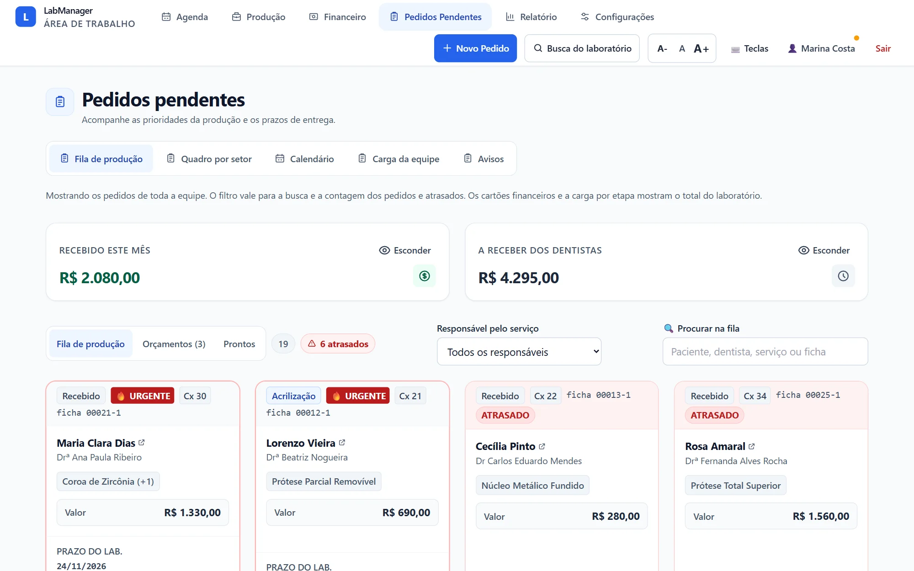
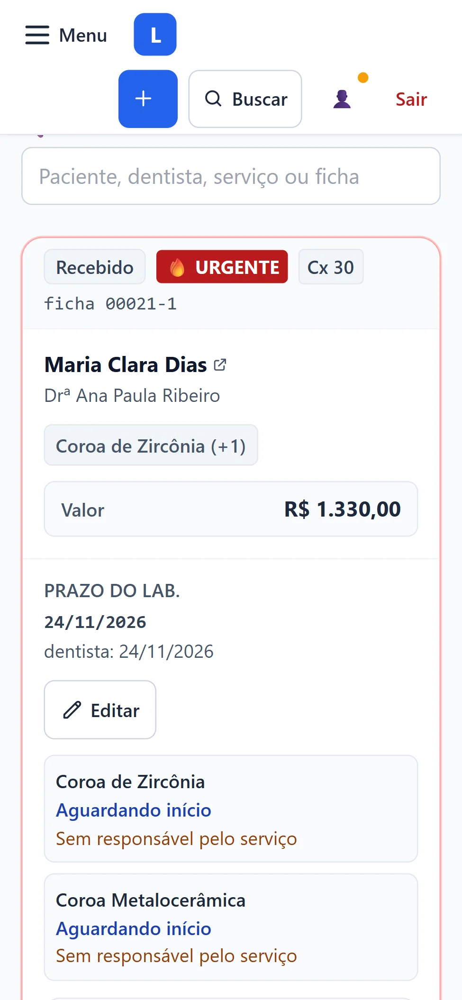

“Esse trabalho é para quando?”
Pedido no papel, prazo na cabeça de quem recebeu e a urgência descoberta no dia da entrega.
a fila mostra urgentes e atrasados primeiro, e o calendário mostra o que sai em cada dia.
O LabManager junta a ficha do pedido, a fila de produção, as entregas, a conta corrente de cada dentista, as comissões da equipe e os relatórios num lugar só. Roda no computador do laboratório e abre no celular de quem está na bancada.


Todas as telas desta página usam dados fictícios.
Caixinha, escala de cor, prova que volta com ajuste, dentista que paga parte agora e parte no mês que vem. O sistema foi desenhado em cima dessas situações.
Pedido no papel, prazo na cabeça de quem recebeu e a urgência descoberta no dia da entrega.
a fila mostra urgentes e atrasados primeiro, e o calendário mostra o que sai em cada dia.
Caderno de fiado, extrato montado à mão e pagamento que ninguém sabe se já foi abatido.
o pedido finalizado entra na conta do dentista e o saldo aparece na ficha, em vermelho ou verde.
Fim de mês somando etapa por etapa, com risco de esquecer um serviço ou pagar duas vezes.
cada etapa de cada serviço gera a comissão do técnico na hora em que o pedido fica pronto.
Clique em qualquer tela para ampliar.
Digite o código do dentista e do serviço e aperte Enter: o preço vem da lista certa, o total se calcula sozinho e o prazo sai do tipo de serviço.
Cada pedido mostra em que etapa está, quem é o responsável e quando tem que sair. Avançar de etapa é um clique, pelo computador ou pelo celular.
Veja a semana ou o mês inteiro pela data do dentista ou pelo prazo interno do laboratório. Os atrasados ficam destacados em cima.
Ao finalizar o pedido, o valor entra na conta do dentista. Pagamentos em Pix, dinheiro, depósito ou cheque abatem o saldo, e o extrato sai pronto para enviar.
Cada serviço tem suas etapas (troquel, modelagem, cerâmica, acabamento) com valor fixo ou percentual e o técnico de cada uma. O fechamento do mês vira um relatório.
Produção mensal, pedidos finalizados, urgentes, provas, remoldagens, movimento financeiro, saldo mês a mês e o relatório anual, todos com período e exportação.
A tela de entrada mostra os compromissos do dia, as entregas de hoje e o atalho para os pedidos pendentes. Cada um vê o que precisa.
Os celulares da equipe abrem o sistema pelo Wi-Fi do laboratório, sem instalar nada da loja de aplicativos. O técnico consulta o pedido, vê os dentes e a cor e avança a etapa ali mesmo.
Nada vai para a nuvem de ninguém: o banco fica no computador do laboratório, com cópias de segurança que o próprio sistema confere.
Cada cópia é verificada antes de ser dada como boa, e a restauração confere de novo antes de trocar os dados.
O dono vê valores, saldos e relatórios; a equipe vê o que precisa para produzir.
Lançamentos financeiros não são apagados nem editados: tudo é corrigido por estorno, com registro.
Se alguém salvar por cima do que outra pessoa acabou de mudar, o sistema avisa em vez de perder o trabalho.
Caiu a internet? O laboratório continua trabalhando normalmente pela rede local.
Trava o ano fechado para ninguém alterar sem querer, sem apagar nenhum dado.
O LabManager nasceu para substituir o sistema antigo sem mudar o jeito de trabalhar: mesmas fichas, mesmos códigos e as teclas de sempre. Os dentistas, serviços, listas de preço, pedidos e saldos são importados e conferidos antes de começar.
| No sistema antigo | No LabManager |
|---|---|
| Ficha de pedido | A mesma ordem de campos, com a grade Qt · Código · Descrição · Unitário · % · Total |
| Código + Enter | Funciona igual: 12, 012 ou 0012 dão no mesmo |
| Contas a receber | Débito, crédito, estorno e pagamento antecipado, com saldo na hora |
| Recibos | Numerados, com IR e valor por extenso, em PDF |
| Fechamento anual | Trava o período, mas não apaga nada |
| Só no computador | No computador e nos celulares do laboratório |
A gente cuida da parte técnica para a equipe só precisar aprender a usar.
Entendemos como o seu laboratório trabalha: serviços, etapas, listas de preço e quem faz o quê.
Trazemos os dados do sistema antigo e conferimos os totais com você antes de virar a chave.
Instalamos no computador do laboratório, ligamos os celulares e deixamos o backup automático funcionando.
Ensinamos a equipe e ficamos por perto nas primeiras semanas para tirar dúvidas.
Não. O sistema roda no computador do laboratório e os celulares acessam pelo Wi-Fi interno. A internet só é útil para mandar extratos e mensagens aos dentistas.
No computador do laboratório, num arquivo só. Você é dono dos dados, e o backup automático guarda cópias conferidas que podem ir para um pendrive.
Com a cópia de segurança em outro lugar, o sistema é instalado em outro computador e a cópia é restaurada, já conferida.
Sim. Os celulares da equipe abrem o sistema pelo navegador e podem instalá-lo na tela inicial como um aplicativo.
Sim. Serviços, etapas de comissão, listas de preço, formas de pagamento e dados do laboratório nos documentos são configuráveis. Se precisar de algo diferente, a gente conversa e ajusta.
Só se você quiser. As permissões separam o que o dono vê do que cada pessoa da equipe vê.
Mostramos o sistema com os seus serviços e tiramos todas as dúvidas, sem compromisso.